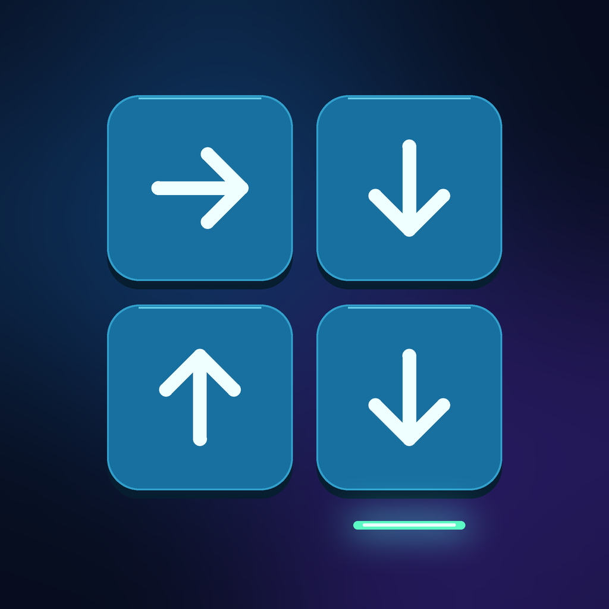

Glidra · Support
One tap.
One chain.
One exit.
Read the arrows. Choose your starting tile. Watch a single decision set the whole board in motion.
Glidra is a puzzle game for iPhone. Learn the rules in Normal mode, discover new mechanics in The Vault, or test your consistency in a generated Gauntlet run.
Need a hand?
Email cogankaa@gmail.com with your device, iOS version, level or mode, and what happened. A screenshot can help; please leave out sensitive information.
Progress and settings
Progress is saved locally on your device. Options includes sound, haptics, and reduced-motion settings. Deleting the app may remove your progress.
Ads and Remove Ads
Occasional interstitial ads may appear between newly completed Normal levels. They do not interrupt a puzzle or a Gauntlet run. Remove Ads is an optional one-time purchase, not a subscription. The purchase screen displays the current price for your region.
To recover a previous purchase, use the same Apple Account and select Restore Purchases in Options. An internet connection is needed for the store. If the store is unavailable, try again later.
Privacy choices
Where applicable, use the privacy choices option in the game's Options screen to review your advertising choices. See the privacy policy for details.